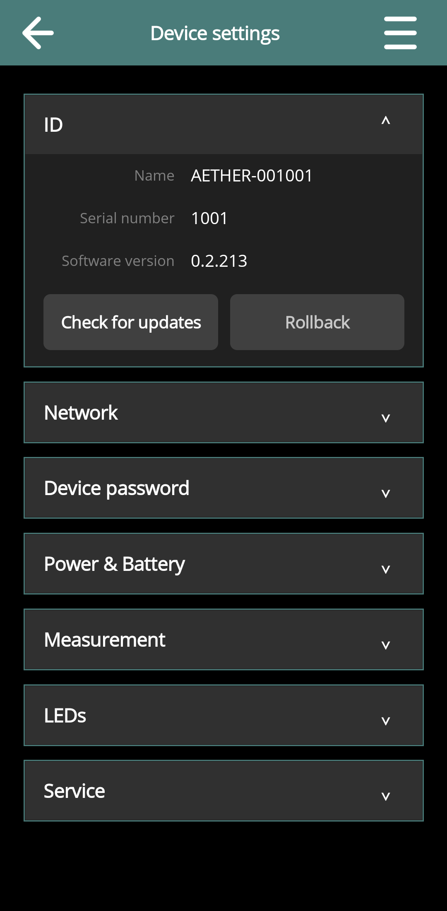
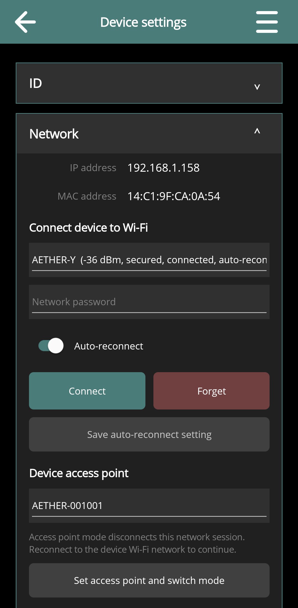
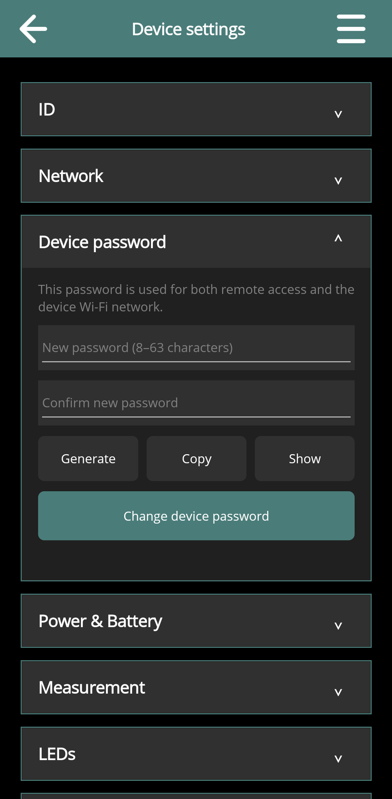
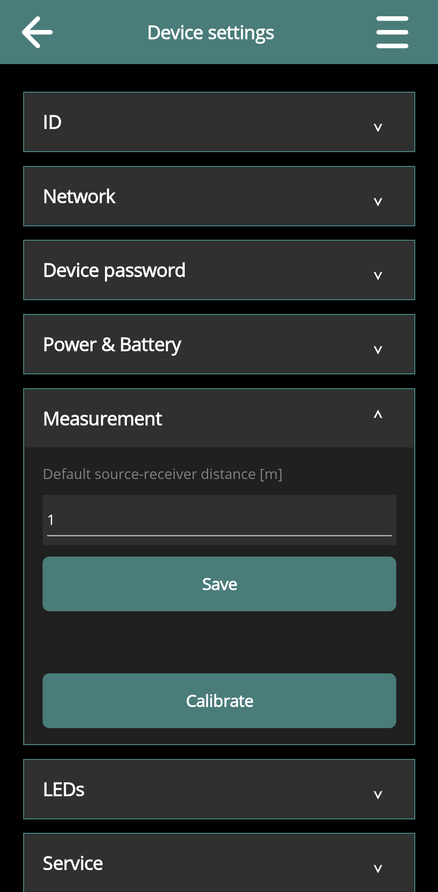
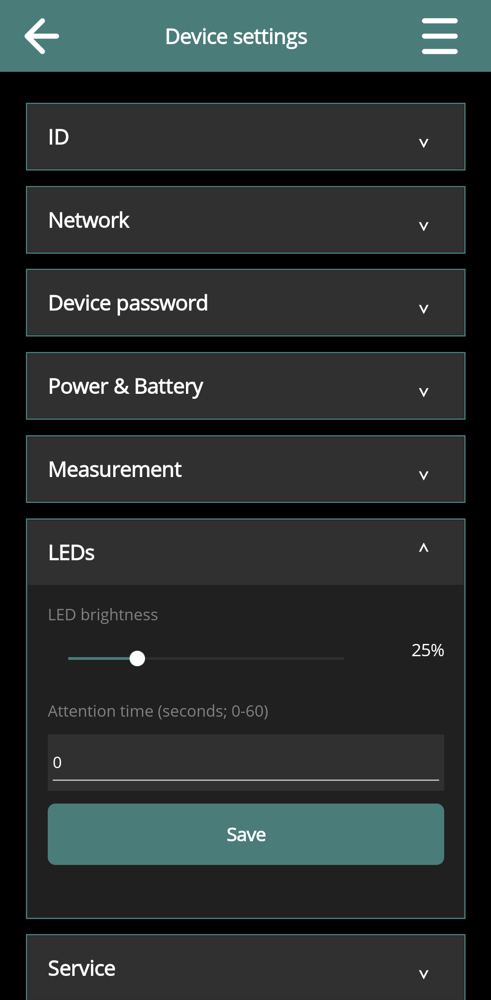
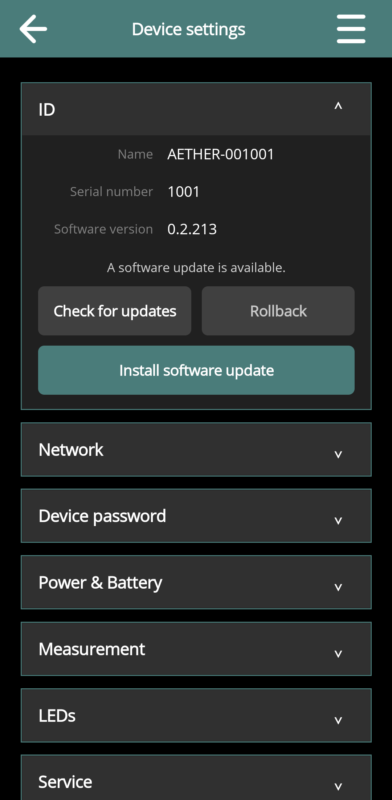
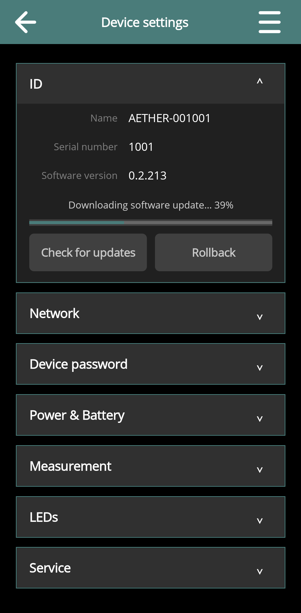
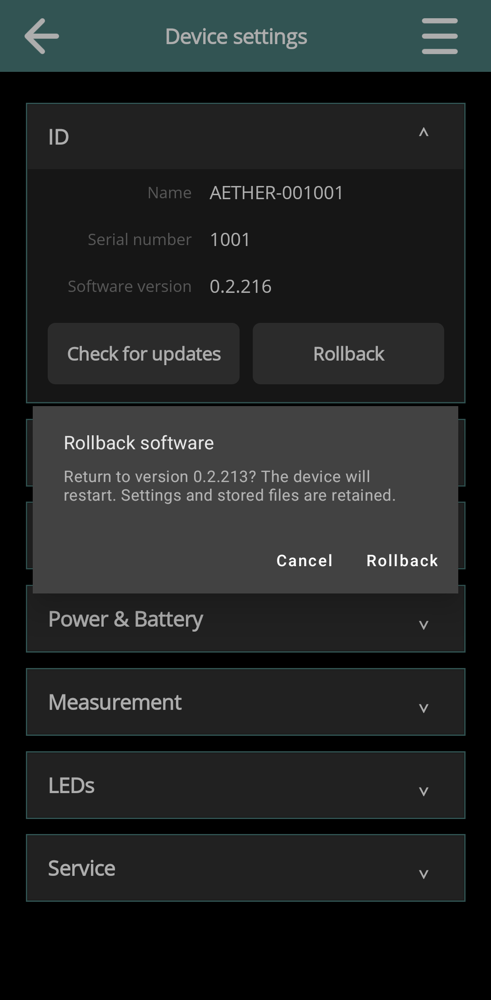

Device Settings and Maintenance
Draft for review: These DIRAC Field instructions and illustrations are being reviewed.
On this page
Open the correct settings
From a connected device's control page, choose menu → Settings. The header identifies the selected equipment. Tap a section heading to expand it; the page presents only the relevant editors and actions for that device.
From Devices or another general page, the same menu entry opens App settings. Device settings change equipment or receiver defaults; App settings change DIRAC Field's own preferences.


ID and software identity
ID shows Name, Serial number and Software version as reported by the device. Use these values to confirm which unit you are configuring and to provide useful information when seeking support. These identity rows are readouts, not a name-edit form.
Network
Expand Network to see IP and MAC information and, on supported devices, scan for Wi-Fi networks. Aether, Echo, Atlas and HBK 2755 provide network configuration in the app; HBK 2255's address information does not imply that this editor is available.
- Under Connect device to Wi-Fi, select the network.
- Enter its access-point password if needed. If the editor asks to Authenticate with device, first supply the device credential; this is not the access-point password.
- On AE equipment, choose the saved network's Auto-reconnect policy as required.
- Use Connect and follow the reported progress. Reconnect the phone/tablet to the resulting network if necessary.
For AE saved networks, Save auto-reconnect setting changes the selected saved network's automatic-connection policy. It does not ask the device to replace that network's password or immediately change networks. Forget removes the selected network's saved information from the equipment; it is different from forgetting a device in the Devices list.
Under Device access point, use the offered settings and Set access point and switch mode to open a direct device network. This disconnects the existing session. Join the device network using the operating system's Wi-Fi settings and return to the app.
Aether supports Station and Hotspot operation. Aether, Echo and Atlas use their active device password for the normal hotspot. HBK 2755 can expose separate hotspot credentials; follow the fields shown for that device.


Device password
Aether, Echo and Atlas provide the unified Device password editor. Enter and confirm the new password, or use Generate and retain a copy using the offered Copy action. Use Change device password to apply it.
The accepted password length is 8–63 characters. Changing it affects remote authentication and the normal device hotspot. Retain the new password and expect other controllers or operating-system Wi-Fi profiles to need it. App-stored passwords and network credentials on the equipment are distinct.


Power & Battery
This section shows reported Voltage, Current, Charge and Charging state. Missing information is not proof of an empty battery. Power actions are available for Aether, Echo, Atlas and HBK 2255 where supported; stop acquisition and playback before using them.
Off requests device power-off; it is not a Wi-Fi mode. Reset restarts the device; it is not Aether's factory reset. Aether must be disconnected from USB-C power for a complete battery-powered shutdown; with USB-C connected its standby/charging behaviour applies.
On Aether, Echo and Atlas, the Auto powerdown timeout editor uses minutes; zero disables automatic powerdown. Save the setting explicitly. Consult the hardware guide for the conditions in which the timeout applies.
Measurement and LEDs
Aether and HBK 2255 provide Default source-receiver distance in metres. Set and Save it for subsequent captures. Existing measurements keep their stored distances and can be corrected through their metadata editor.
Aether also provides the Calibrate action in Measurement, an LEDs section for brightness and attention time, and a Service section for factory reset. See Using Aether for the app procedure and the Aether guide for physical preparation.




Check and install device software
- Stop playback, measurement and calibration, and provide stable device power and connectivity.
- In ID, choose Check for updates on supported equipment. A check requires access to the update service; a local-only hotspot may not provide that access.
- If an update is offered, review its information and choose Install software update.
- Allow download, installation and restart to finish. Reconnect afterward and confirm the reported Software version.
The app has update support for Aether, Echo, Atlas and HBK 2755; HBK 2255 updates are not managed here. Availability still depends on the device and update service.
Rollback is offered only when the app has a verified retained target for supported equipment. Review the proposed version and confirmation before proceeding. It restores the retained device software image, not deleted measurements or an earlier copy of all settings. Update DIRAC Field itself through its normal app installation/distribution route, not this device-software control.





